Introduction
In this challenge we are working on reverse engineering a Go ransomware sample to uncover its evasion techniques, encryption implementation, lateral movement capabilities, and anti-forensics methods. Loads to do, so let's dive in!
Q1) Which version of the Go compiler was used to build this binary?
Normally we would use tools like Detect-It-Easy or PEStudio to identify compiler versions and
other related information. However, with go binaries, we can use the go executable itself.
For example go version -m shinyspider.exe already is enough to
identify the Go Compiler version: go1.24.5
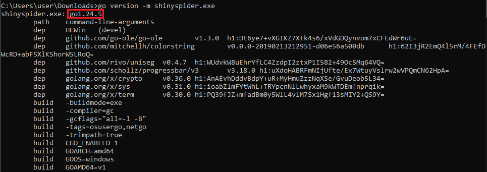
Q2) What is the Relative Virtual Address (RVA) of the program's main function?
The Relative Virtual Address can be obtained by using IDA (Pro) and enabling Line Prefixes.
To do so, open IDA (Pro) and navigate to Options -> General. In the Disassembly tab, you
should see a checkbox at the top of the right-hand window saying 'Line Prefixes'. When you
enable this and then subsequently go to the main_main function,
we can easily derive the RVA, which is 0xDAE980
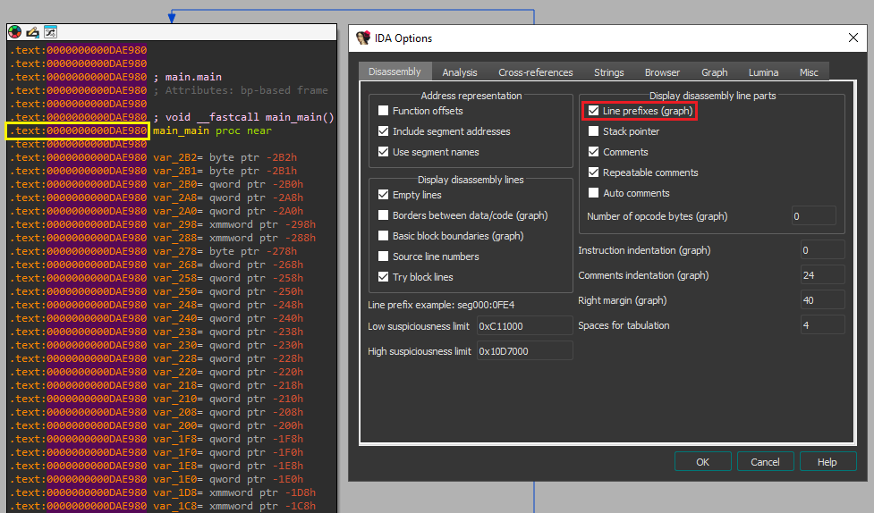
Q3) In the isRunningAsAdmin function, which Windows API is the first to be resolved via the HCWin/apihash package?
Using IDA (Pro), we can use the functions search option to look for the isRunningAsAdmin function and navigate to it in our IDA View window.
As IDA has automatically resolved string names, function names and other valuable information
for us, we only have to read through the function to identify the answer to the question.
At line 0xDA716C we see a reference to _ptr_apihash_APIHash and subsequently a call to the function called
HCWin_apihash__ptr_APIHash_GetCurrentProcess.
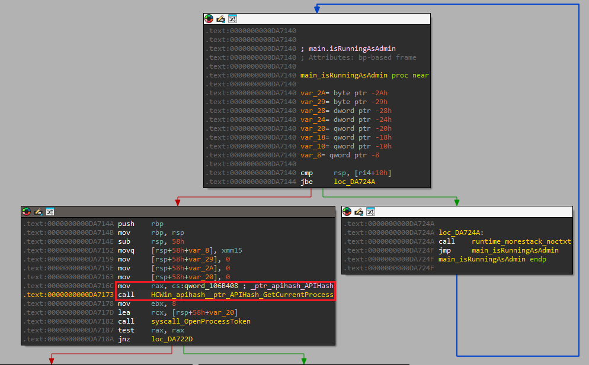
Furthermore, when we dive into this function, we see that the string GetCurrentProcess is obtained and used as a parameter for a call to
the function HCWin_apihash__ptr_APIHash_CallAPI
This allows us to conclude that the Windows API that is being resolved is GetCurrentProcess.
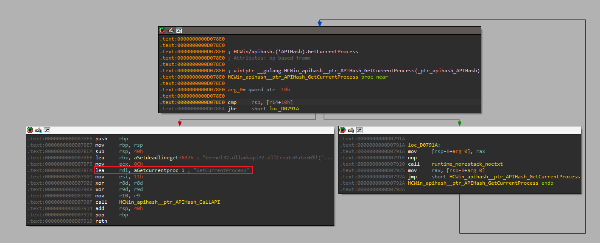
Q4) The binary calls GetTokenInformation. What specific token class (by name) is being requested to verify privileges?
Within the isRunningAsAdmin function, a syscall to GetTokenInformation can be identified. The function takes
a total of 5 parameters, with the second parameter containing the TOKEN_INFORMATION_CLASS. In the case of this malware sample,
that value is passed through ebx which is set to the value 0x14 and corresponds to TokenElevation
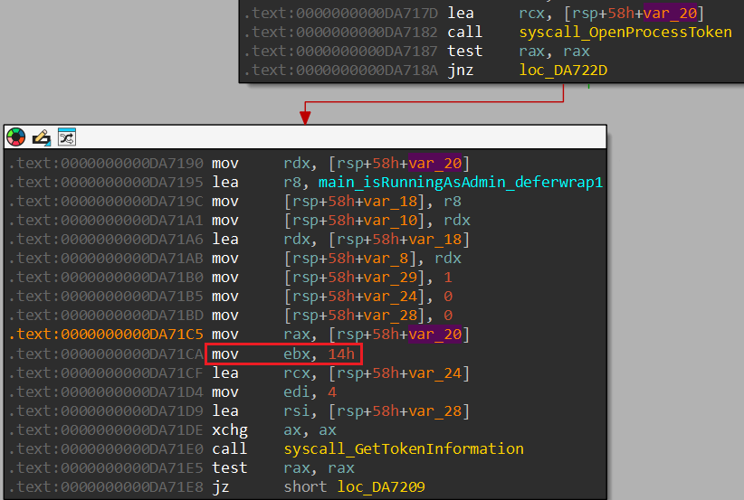
Q5) Which package is responsible for configuring and executing the evasion of Event Tracing for Windows?
Based on the information in the question, we have a few starting points that could lead us to
identifying the function in question. The most straightforward way is to use the functions
search option and use any of the keywords (such as "evade" or "etw") to identify corresponding
functions in the binary. To our luck, one package contains functions responsible for configuring
and executing the evasion of Event Tracing for Windows: HCWin/etwevasion.
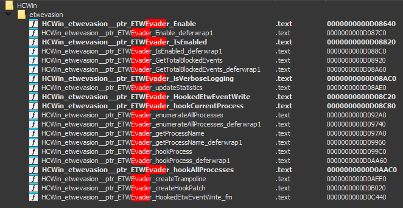
Q6) If the malware fails to retrieve the computer name via the Windows API, which environment variable does it read as a fallback to generate the system seed?
Before we start our quest down a rabbit hole in search of a function calling GetComputerName*, we have to remind ourselves that the malware uses
API hashing, so we will not be able to find it searching for strings and any function that uses
GetComputerName* might be a false flag.
As such, we have to rely on the last part of the question, to actually search for a function
that generates the system seed. Within the main package, the
function getSystemSeed seems the prime candidate.
Within the function, we see the hardcoded values for the DLL and GetComputerName function and at
the end of the block, we see that if the result is zero, a call to Getenv takes place and the specific environment variable that the
value is request for corresponds to USERNAME
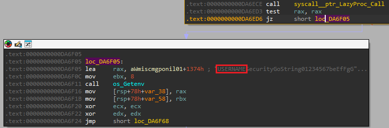
Q7) The function getSystemSeed dynamically loads a DLL to access GetComputerNameW. What is the name of this DLL?
We stay within the getSystemSeed function. We previously already
identify the operation which loads the string GetComputerNameW.
Shortly before this operation we identify that the string kernel32.dll is loaded.
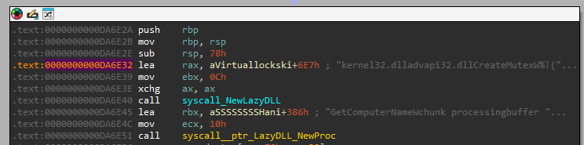
Q8) The malware prepends a specific string to the generated Mutex name to ensure the synchronization object is visible across all user sessions. What is this prefix?
Within the main package, a function called generateMutexName
can be identified. At the end of the function, at and after 0xDA70FA, we see the concatenation of the generated mutex
with a hardcoded string of the value Global\. By reading the
Microsoft
Documentation, we learn that the Global\ prefix should be
used to ensure the mutex is visible across all terminal server sessions.
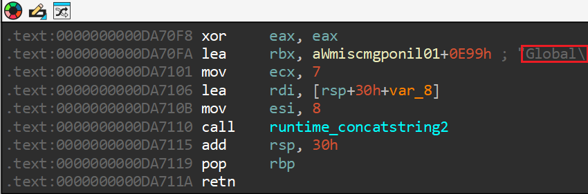
Q9) Which specific Windows error code does the checkSingleInstance function check to see if the Mutex already exists?
By analyzing the main_checkSingleInstance function, we should be
able to identify the specific Windows error code. At the bottom of the function, we see three
specific nodes which all contain a specific string that will be send to fmt_Errorf, which handles formatting error messages. The message
another instance is running is highly likely indicating that
the mutex already exists and therefore another instance of this malware is already running.
Just before this error block, we see that a check against the value 0xB7 takes place. By analyzing the System
error codes, we learn that 0xB7 denotes that the mutex
already exists.
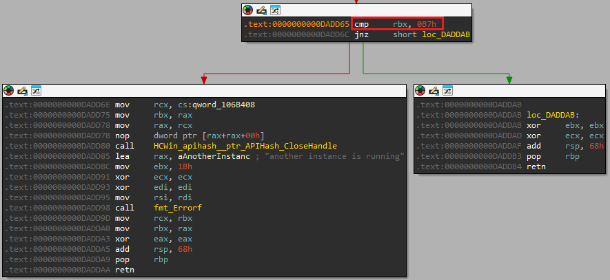
Q10) The Hook Shield module starts a monitoring routine to check for hooks periodically. What is the time interval (in milliseconds) defined in this check?
The HCWin/hookshield module contains multiple functions, amongst
which the performScan function. During analysis, we can't find any
integer that matches a time interval. This function is called from monitoringLoop. Within this function, we neither can find any time
interval variable. The caller of monitoringLoop is StartMonitoring_deferwrap2 which is invoked by StartMonitoring. In neither of these functions do we find any
variable which clearly stands out as matching a time interval. However, StartMonitoring is invoked from main_main with one argument:
0x1DCD6500 or in decimal: 500000000.
Taking the answer format into account, it appeared to me that the given value is in nanoseconds.
Therefore, the interval in milliseconds is 500.
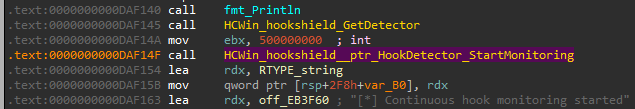
Q11) To prevent victims from restoring files, the malware executes a specific function to remove Windows Volume Shadow Copies. What is the name of this function?
By now, we know that all malware functionality is part of the HCWin package. Therefore, we can iterate through the modules in this
package, to identify any functions that perform operations on Volume Shadow Copies.
We see that there's a specific module named shadow, which contains
amongst others the function DeleteShadowCopies.
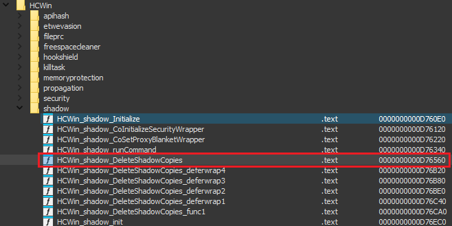
Q12) How many distinct services or processes is the malware configured to terminate (kill)?
When analyzing the killBlacklistedServices function, we see at
location 0xDAB7CD a pointer to a hardcoded offset is loaded into
rax. Subsequently, that is stored in [rsp+240h+var_190] which is in a loop block and gets increased for
each iteration at location 0xDAB7EC.
Now, by analyzing what is at off_1066D00, we identify that it
contains pointers to hardcoded strings elsewhere within the .rdata
section. All of the strings contain a service or process name, therefore, we can count all
values in this list and obtain the total number of distinct services or processes to kill.
In total, the list contains 31 distinct services or processes.
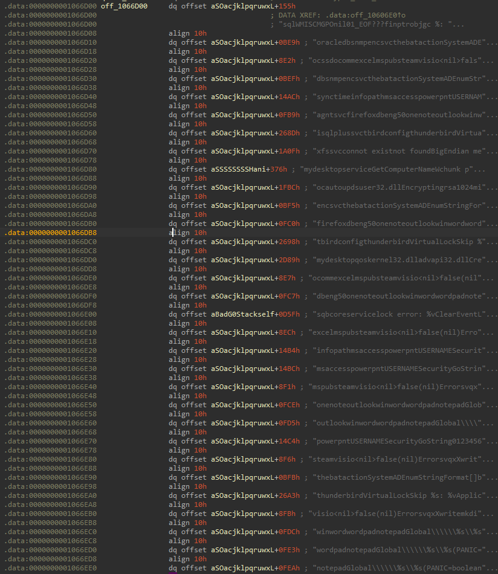
Q13) What is the memory address of the string data for the first service in the kill list?
By answering question 12, we have identified the location of the list to be at 0x1066D08.
Furthermore, we know that the list contains pointers to data, so we will have to follow the
pointer of the first entry in the list to actually identify the memory address of the string.
Do note, that each pointer contains an additional offset. So for the first entry, the data
starts at 0xE4BF45, and we need to add the offset of 0x155 to it.
The final answer in this case is that the first service is located at: 0xE4C09A
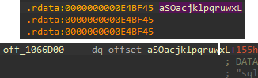
Q14) The malware uses multiple methods to propagate to other systems. According to the string at 0xe4c09d, what is the first protocol it attempts to use for remote execution?
We can navigate to the memory location by using the shortcut G in
IDA. We end up in the .rdata section and see a bunch of bytes.
However, we know from the question that there must be a string here, so we can use the shortcut
A to directly convert the bytes to a string. The first three
letters
at this location correspond to WMI.
WMI stands for Windows Management Instrumentation and is a popular method to remotely execute commands
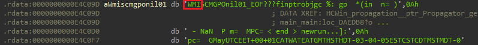
Q15) To identify vulnerable file shares for lateral movement, the malware checks for a specific open port number. What is this port?
Within the HCWin/shares package, we identify the existence of a
function named isSMBPortOpen. Within this function we identify the
static value of 445 which is used to join the host and port.
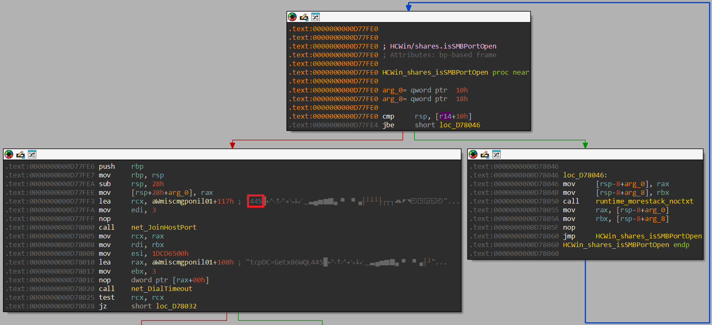
Q16) The malware contains a hardcoded list of files to skip to ensure the OS remains bootable. Which hidden system directory related to deleted files is explicitly excluded?
This took some manual effort of going through the .rdata section
and converting all individual bytes to strings. Furthermore, based off of "directory related to
deleted files", it seemed apparent we would be searching for the hidden directory name for the
recycle bin. Ultimately, we end up finding a string referring to $recycle.bin
Ultimately, it is likely that during analysis we missed the iterator over one of the variables
within .rdata that would have corraborated our initial hunch.
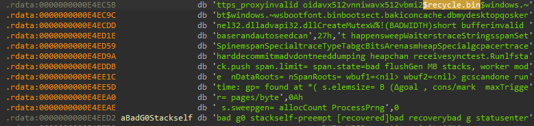
Q17) To avoid encrypting its own instructions, the malware excludes a specific filename from the encryption list. What is the name of this note file?
Previously, we identified two functions responsible for identifying files findFiles and findFiles_func1.
Within the latter, we identify a hardcoded string being loaded at 0xDAB3D8 with a value of R3ADME_1Vks5fYe.txt. Now, most often, ransomware operators drop a
file with a name along the lines of "README" on infected systems containing instructions on how
to contact and more importantly pay the operators to remove the ransomware. It is likely that
this
file is being excluded.
To further corraborate our finding, we look at the function encryptFile,
which also incorporates a check to ensure that the README file is not encrypted, as the function
will return without encrypting the file if the current filename matches the hardcoded README
file name. Therefore, we can conclude that this file contains the instructions and is excluded.
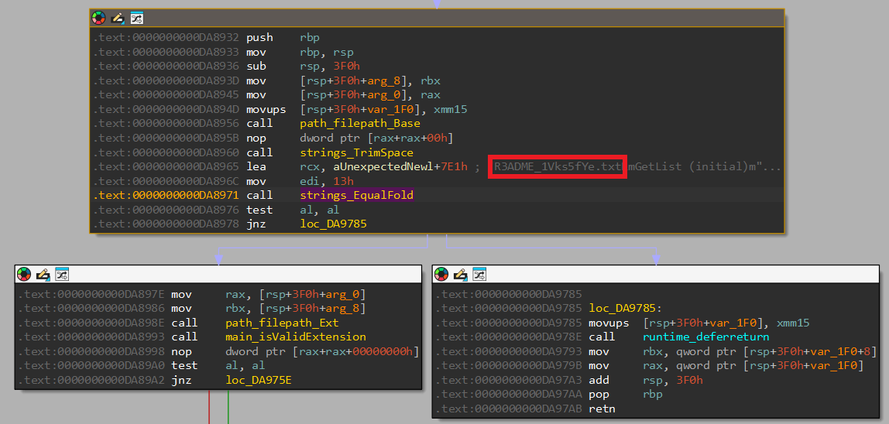
Q18) The malware uses a checksum algorithm to identify files it has already encrypted. What is the expected total length (including the dot) of the extension validated in 'isValidExtension'?
To answer this question, we dive into the isValidExtension
function. This function resides in the main package, and another
function containing the word Extension exists, by the name of
generateExtension. By analyzing the latter function, we identify
that including the dot, an extension of length 9 is generated.
Now we can go back to isValidExtension and identify that the first
check in this function is to see if the length is equal to 9.
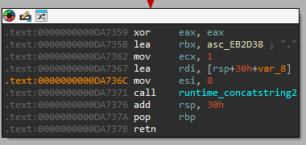
Q19) The malware generates a random symmetric key for each file. Based on the buffer size passed to crypto/rand.Read, what is the bit length of this key?
By cross-referencing all calls to crypto/rand.Read we identify
that it is called from encryptFile. The buffer size passed to the
Read function is of size 32 bytes.
Therefore, by calculating the bit size, we know that the key is of size: 256 bits.
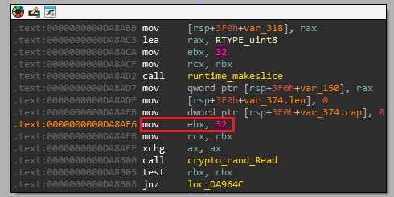
Q20) To secure the per-file symmetric keys, the malware encrypts them using a public key algorithm. Which specific padding scheme is used with RSA?
We stay within the encryptFile function from the previous question
and continue analyzing the code. At location 0xDA8C99 we see a
call to a function that will load the Public Key from the Modulus. Subsequently a new SHA256
value
is created and at crypto_rsa_EncryptOAEP is called.
Now, RSA uses OAEP, which stands for Optimal
Asymmetric Encryption Padding to enhance the security of the RSA algorithm.
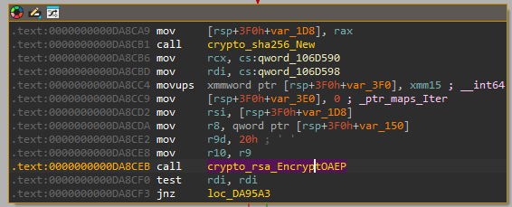
Q21) The malware creates a header for encrypted files. What 4-byte ASCII string (Magic Marker) is written at the very end of the file header?
Within the encryptFile function, starting at 0xDA8D20, a string is trimmed and subsequently lowered.
Then, the length of the string is compared to 7 and subsequently the contents of the string
is compared. Afterwards, there are two main paths that lead to 0xDA8D7F
and in both a string ("partial" and "automatic") are compared. Whichever comes out, at 0xDA8D7F, the string "SPDRENDS" is placed into the buffer [rsp+3F0h+var_374.ptr].
This buffer is then used at 0xDA903B to load the value into rbx
which is subsequently passed to the Write function after
encryption has completed.
Based on this analysis, we can conclude that the 4-byte ASCII string that is written to the end
of the file is: ENDS
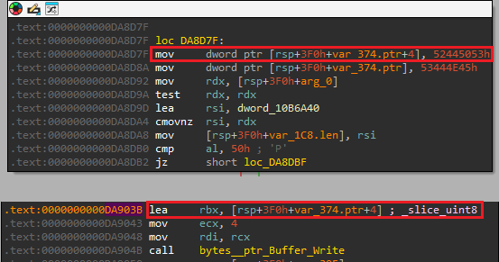
Q22) For large files, the malware does not encrypt the entire content to save time. What single character does it write to the file footer to indicate this mode?
Within the encryptFile function, starting at 0xDA8D20, a string is trimmed and subsequently lowered.
Then, the length of the string is compared to 7 and subsequently the contents of the string
is compared. When we follow the blocks from 0xDA8D30 to 0xDA8D42 the individual characters spell "partial", upon which the
value 0x50 is loaded into eax.
Then at 0xDA8DB0 a compare of al
against 0x50. If the values are equal, we enter 0xDA8D8F which, based on some hardcoded strings appears to be the
partial encryption routine.
Now, when this routine ends successfully, we see at 0xDA8FF6 the
value of 0x50 is moved back into eax.
At 0xDA901B the value gets moved to [rsp+3F0h+var_395], which later on gets moved into ecx and is subsequently moved into [rsp+3F0h+var_374.cap+6] which is passed to the Write function and written to the end of the file.
Therefore, we can conclude that the value 0x50 or P is the single character it writes to the file footer to indicate
partial encryption for large files.
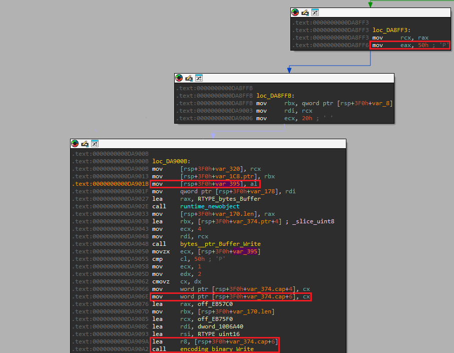
Q23) The malware uses a specific Windows API function from user32.dll to apply the new wallpaper. What is the name of this function?
Within the main package, we identify a function called changeWallpaper. By analyzing this function, we identify the loading
of the static string user32.dll, after which the static string
SystemParametersInfoW is loaded. By reading the docs,
we can conclude that this function can be used to change the wallpaper.
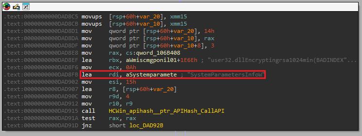
Q24) The malware uses above mentioned API to change the desktop wallpaper. What specific SPI constant (by name) is passed as the 'uiAction' argument to trigger this behavior?
By further analyzing the actions around the API call, we identify that the value 0x14 is stored in [rsp+60h+var_20]
which is later loaded into r8 and passed to the
SystemParametersInfoW call.
This value denotes the SPI constant and using the Windows
docs, we learn that this value corresponds to the SPI string: SPI_SETDESKWALLPAPER

Q25) In the fallback self-destruct mechanism, the malware drops a VBScript to disk. Which Windows executable is explicitly invoked to run this script silently?
The main package contains a function called selfDestruct. The main mechanism for self-destruction is initiated
through the deleteSelfViaReopenFlag. If the result of this
function is negative, we resort to the method which is defined in deleteSelfOnReboot.
Ultimately, if this also fails, we fallback to deleteSelfViaWMI.
Within this function, we identify the vbscript name at 0xDAE287
and subsequently see the hardcoded Windows executable wscript.exe
being passed to CreateProcessW to execute the script silently (the
/b parameter specifies batch mode, which doesn't display alerts,
scripting errors or input prompts.).
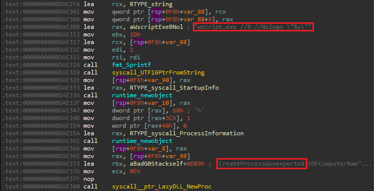